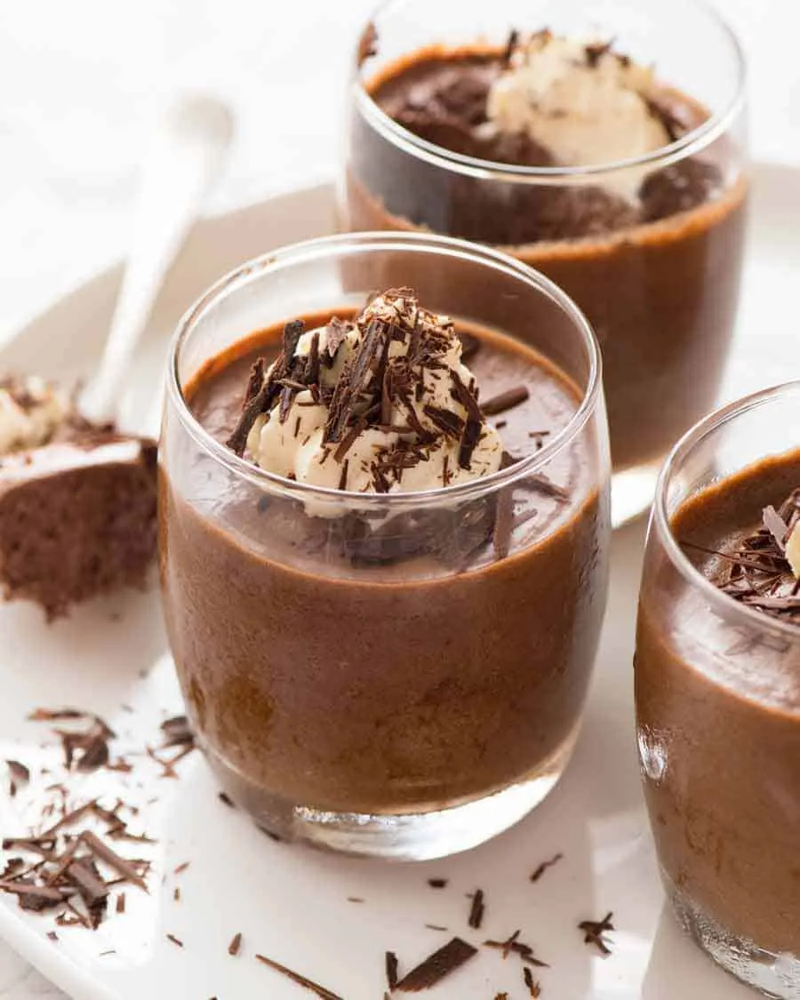

Classic Chocolate Mousse Recipe
Ingredients:
- 4 large egg yolks
- ¼ cup sugar
- 2 ½ cups heavy whipping cream
- 8 ounces semisweet baking chocolate, chopped
Instructions:
- Beat egg yolks in a small bowl with an electric mixer on high speed for about 3 minutes until thick and lemon-colored.
- Gradually beat in sugar.
- Heat 1 cup of whipping cream in a saucepan over medium heat until hot.
- Slowly stir at least half of the hot cream into the egg yolk mixture, then return everything to the saucepan.
- Cook over low heat, stirring constantly, until the mixture thickens (do not boil).
- Stir in chopped chocolate until melted, then refrigerate for about 2 hours, stirring occasionally.
- Beat the remaining 1 ½ cups of whipping cream until stiff peaks form.
- Fold whipped cream into the chocolate mixture.
- Pipe or spoon into serving bowls and refrigerate